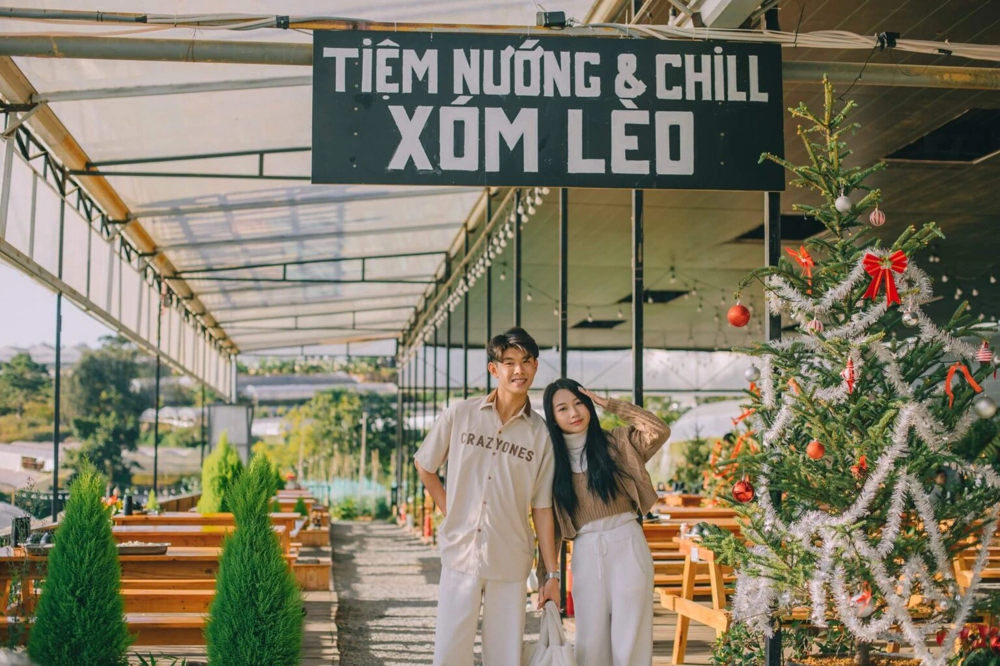
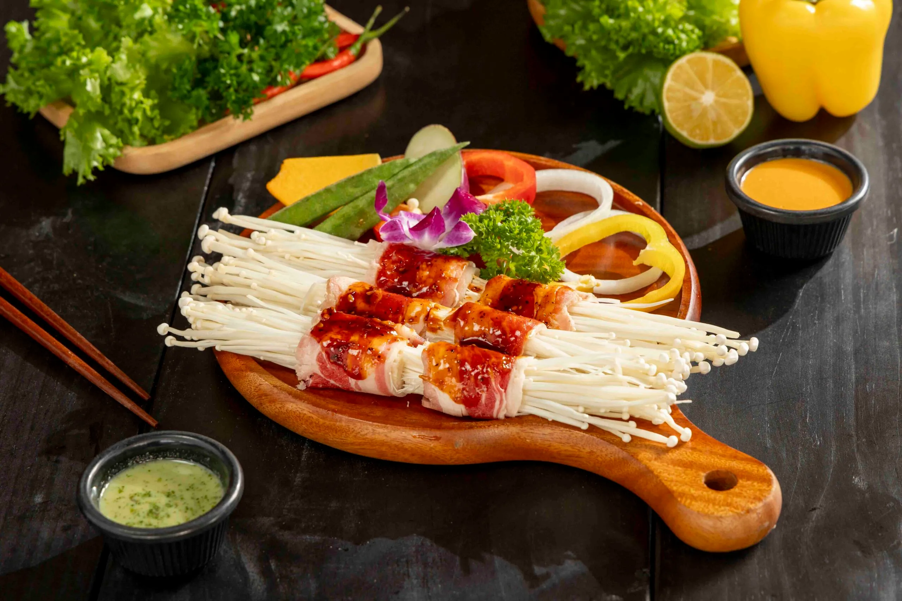
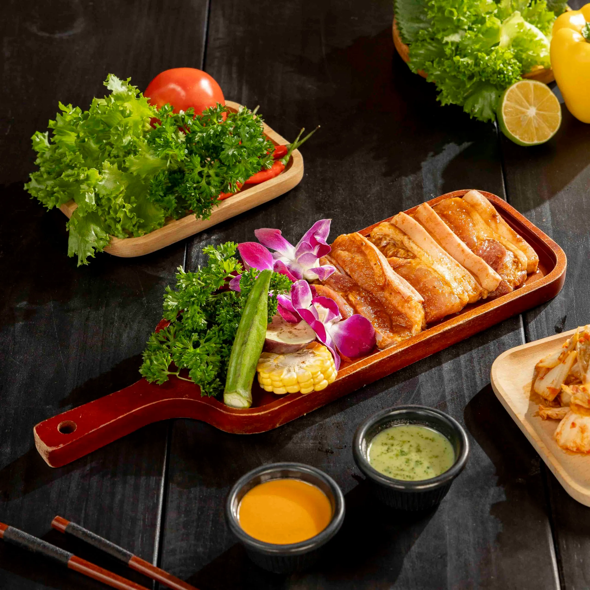
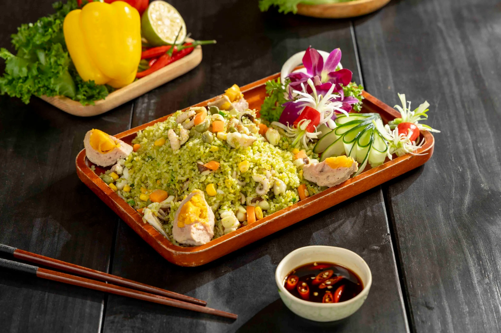
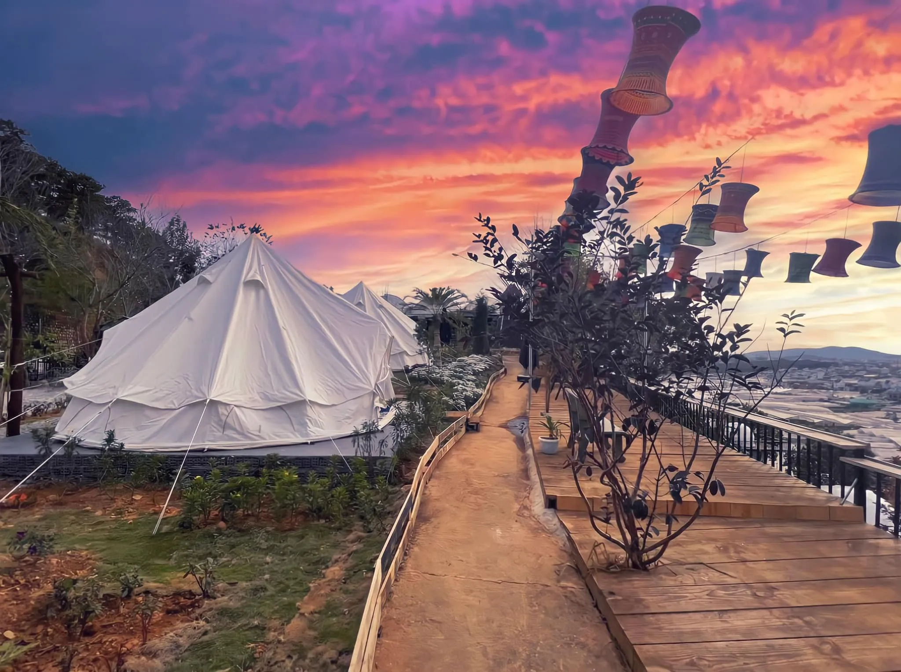

8/3 – Lên kèo đến Tiệm Nướng & Chill Xóm Lèo: Trốn phố, chạm bình yên

Mục lục bài viết
Nếu bạn đang tìm kiếm một nơi có thể tạm rời xa cuộc sống xô bồ, khói bụi của thành thị để hòa mình vào thiên nhiên, lắng nghe nhịp đập của rừng thông và tận hưởng cảm giác thư thái tuyệt đối, thì Tiệm Nướng & Chill Xóm Lèo chính là điểm đến không thể bỏ lỡ. Đây là một chốn dừng chân lý tưởng cho những ai yêu mến một Đà Lạt nguyên sơ – mộc mạc, yên bình nhưng vẫn đủ cuốn hút với những trải nghiệm rất riêng.
1. Xóm Lèo Đà Lạt – Góc bình yên giữa thành phố mộng mơ
Khi nhắc đến Đà Lạt, nhiều người nghĩ ngay đến những địa danh nổi tiếng như Hồ Xuân Hương, Thung Lũng Tình Yêu, hoặc Lang Biang. Nhưng với những ai mê khám phá, thích tìm đến những điều mới mẻ, Xóm Lèo Đà Lạt lại là một cái tên đặc biệt. Đây không chỉ là một nơi để “trốn phố thị”, mà còn là điểm chill lý tưởng để tận hưởng trọn vẹn nét đẹp nguyên sơ của Đà Lạt.
Xóm Lèo là một khu dân cư nhỏ, nằm tách biệt giữa rừng thông xanh thẳm, chỉ cách trung tâm Đà Lạt khoảng 15 phút di chuyển. Nơi đây giữ trọn nét hoang sơ của Đà Lạt ngày xưa, với những con đường rải đá, nhà gỗ mái ngói, giàn hoa giấy trước hiên nhà, và không khí yên bình đến lạ.
Nếu bạn đang tìm kiếm một địa điểm để chill ở Đà Lạt đúng nghĩa, thì đừng chần chừ, chill Xóm Lèo chính là trải nghiệm bạn không thể bỏ lỡ.
2. Top những trải nghiệm không thể bỏ qua tại Xóm Lèo
2.1. Thưởng thức ẩm thực đậm chất cao nguyên
Ẩm thực tại Xóm Lèo Đà Lạt là sự kết hợp giữa nét mộc mạc của đồng quê và chút sáng tạo rất riêng. Ngay từ bữa sáng, bạn đã có thể cảm nhận sự tinh tế trong từng món ăn:
-
Bánh mì xíu mại thơm nức với nước dùng sền sệt, cay nhẹ.
-
Sữa đậu nành nóng – một biểu tượng của buổi sáng se lạnh Đà Lạt, nay lại càng đặc biệt hơn khi được thưởng thức giữa rừng thông.
-
Các món ăn chính như cơm lam gà nướng, rau rừng xào tỏi, canh chua cá bống suối, hay thịt kho măng đều mang lại cảm giác “cơm nhà giữa rừng”, vô cùng gần gũi.
🔥 Tiệm Nướng & Chill Xóm Lèo – Trải Nghiệm Ẩm Thực Ấm Cúng

Nằm giữa không gian thiên nhiên thơ mộng, Tiệm Nướng & Chill Xóm Lèo là điểm đến lý tưởng cho những ai yêu thích ẩm thực nướng bên bếp lửa ấm áp. Quán nổi bật với thực đơn đa dạng và những món ăn hấp dẫn như:
Ba chỉ bò cuộn kim châm🥓🍄 – Sự kết hợp tinh tế giữa vị ngọt của nấm và độ mềm béo của thịt bò, được nướng trên bếp than hồng, mang đến cảm giác ấm cúng và gần gũi.

Ba chỉ heo nướng ngũ vị 🍖 – Được ướp kỹ với các loại gia vị truyền thống, miếng thịt vàng ươm thơm lừng chắc chắn sẽ khiến bạn không thể cưỡng lại.

Cơm chiên cao nguyên 🍚🔥 – Một món ăn dân dã nhưng đầy đặn, giòn tan bên ngoài, thơm ngậy bên trong, kèm rau củ tươi và gia vị vừa miệng.

Lẩu gà lá é 🍲 – Món lẩu trứ danh của Đà Lạt, mang hương vị thanh mát, cay nhẹ từ lá é kết hợp cùng thịt gà chắc ngọt.
Thưởng thức những món ngon này cùng một ly rượu vang classic Đà Lạt 🍷, tận hưởng không khí se lạnh và không gian yên bình, chắc chắn sẽ mang lại cho bạn một bữa ăn trọn vẹn và đáng nhớ.
📌 Inbox: Xem hướng dẫn đường đi
📌 Địa chỉ: 113 Huỳnh Tấn Phát, Phường 11, Đà Lạt, Lâm Đồng 67000
📌 Google Map: Tại đây
📌 Hotline:
👉 076.45.27.336
👉 08.99.42.84.34
👉 0902.91.22.40
⛺ Cắm trại giữa rừng thông

Đến Xóm Lèo Đà Lạt, bạn không thể bỏ qua trải nghiệm cắm trại giữa rừng thông xanh mướt. Hãy mang theo lều, dựng trại và tận hưởng đêm Đà Lạt se lạnh bên bếp lửa hồng 🔥. Thay vì tiệc nướng, hãy thử một phong cách chill nhẹ nhàng hơn – cùng nhau nhâm nhi một ly trà nóng 🍵, thưởng thức sữa nóng 🥛, thả hồn vào không gian yên bình và hòa mình vào thiên nhiên. Chắc chắn đây sẽ là một trải nghiệm thư giãn tuyệt vời, giúp bạn cảm nhận sâu sắc hơn sự an yên của vùng đất này.
☁️ Săn mây vào sáng sớm
Nếu là một tín đồ yêu thích săn mây, Xóm Lèo cũng là một địa điểm lý tưởng. Sáng sớm, bạn có thể leo lên một điểm cao để ngắm nhìn những làn sương mờ ảo ôm trọn cảnh vật. Khung cảnh này chắc chắn sẽ khiến bạn mê mẩn và muốn lưu lại những bức ảnh tuyệt đẹp 📸.
📷 Check-in những góc sống ảo đậm chất vintage
Xóm Lèo Đà Lạt không thiếu những góc sống ảo thơ mộng. Những căn nhà gỗ nhỏ xinh 🏡, những con đường lát đá phủ đầy rêu phong hay chỉ đơn giản là một chiếc bàn gỗ bên khung cửa sổ cũng đủ làm nên một bức ảnh đầy chất thơ.
🚀 Lên Kèo Đến Xóm Lèo Ngay Thôi!
Xóm Lèo Đà Lạt chính là điểm dừng chân tuyệt vời cho những ai yêu thích sự bình yên, muốn tránh xa phố thị và tận hưởng những phút giây thư giãn trọn vẹn. Đặc biệt, đừng quên ghé Tiệm Nướng & Chill Xóm Lèo để thưởng thức những món nướng thơm ngon trong không gian ấm cúng giữa núi rừng.
Nếu bạn chưa từng ghé qua, hãy lên kèo ngay với hội bạn thân và khám phá một Đà Lạt rất khác – mộc mạc, bình dị nhưng không kém phần quyến rũ!
Bạn đã sẵn sàng cho một chuyến đi đầy trải nghiệm chưa? Lên kèo đi Xóm Lèo thôi! 🎒